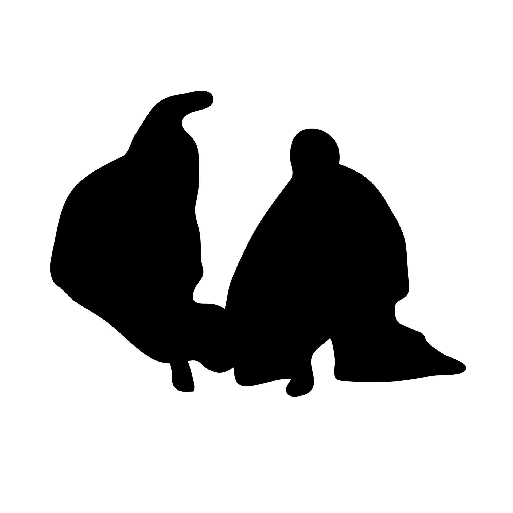
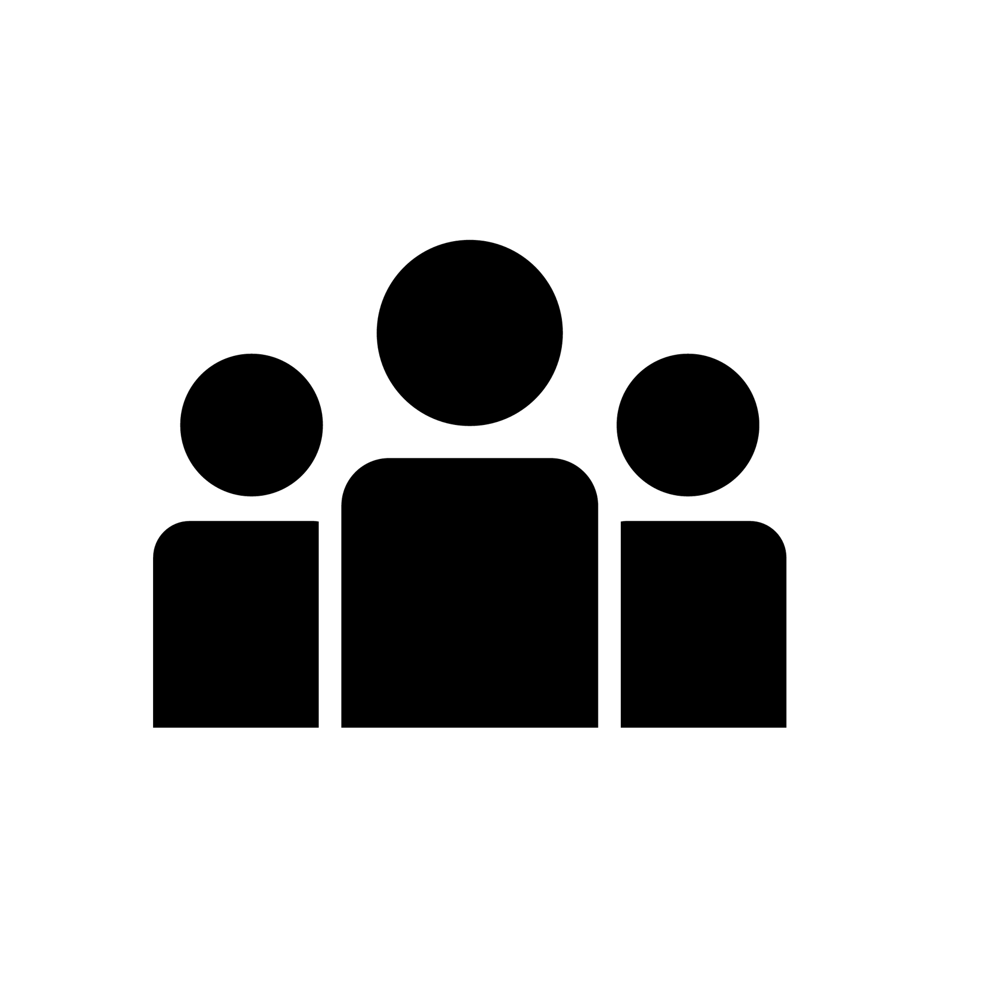

獲獎紀錄
每年合氣道中最重要的大事莫過於演武與全國中正盃的比賽:演武主要是讓各個道館能夠集合在一處,做合氣道的交流,讓學習合氣道的人能夠看看別人的技法,開闊眼界;而中正盃是全國性的比賽,由各個道館報名,由於合氣道的特色,所以我們的比賽通常都是偏向表演賽的性質．
中華民國合氣道推廣訓練協進會主辦
—全國中正盃合氣道錦標賽
| 106年度 |
|---|
| 社會段外組 基本技法 季軍 |
| 社會段外組 基本技法 殿軍 |
| 社會有段者乙組 基本技法 亞軍 |
| 社會有段者乙組 基本技法 季軍 |
| 社會有段者乙組 應用技法 冠軍 |
| 107年度 |
| 社會段外組 應用技法 冠軍 |
| 社會有段者乙組 基本技法 亞軍 |
| 社會有段者乙組 應用技法 冠軍 |
| 社會有段者甲組 基本技法 亞軍 |
| 社會有段者甲組 應用技法 冠軍 |
| 108年度 |
| 大專段外組 基本技法 第五名 |
| 大專段外組 基本技法 季軍 |
| 大專段外組 基本技法 亞軍 |
| 大專段外組 基本技法 冠軍 |
| 大專段外組 應用技法 冠軍 |
| 社會有段者乙組 應用技法 冠軍 |
| 社會有段者甲組 基本技法 亞軍 |
| 社會有段者甲組 應用技法 亞軍 |
中華民國大專院校體育總會主辦
—全國大專盃合氣道錦標賽
| 106年度 |
|---|
| 段外乙組 基礎技法 亞軍 |
| 段外乙組 基礎技法 第六名 |
| 段外甲組 基本技法 冠軍 |
| 段外甲組 應用技法 亞軍 |
| 有段者組 基本技法 亞軍 |
| 有段者組 基本技法 冠軍 |
| 有段者組 應用技法 冠軍 |
| 有段者組 自由技法 冠軍 |
| 基本劍 冠軍 |
| 團體總冠軍 中原大學合氣道社 |
| 107年度 |
| 段外乙組 基礎技法 第五名 |
| 段外乙組 基礎技法 殿軍 |
| 段外乙組 基礎技法 季軍 |
| 段外甲組 應用技法 冠軍 |
| 有段者組 基本技法 冠軍 |
| 有段者組 應用技法 冠軍 |
| 基本劍 季軍 |
| 基本劍 冠軍 |
| 團體總冠軍 中原大學合氣道社 |
 社團活動
>合保盃
亞運保齡球館
透過打保齡球，增進社員的互動，凝聚彼此的感情
>寒訓
中原大學活動中心4樓A426武術練習室
總結本學期所學到的技法，並學習一些額外的實用技法來精進自己。
>期末社員大會
全人村203教室
藉由活動提升社團的向心力，增加彼此間的感情。
>登山健行
新北市板橋區新月橋及新海人工濕地
透過登山健行可以提升個人心肺功能，促進社員之間的感情與增進和各道館的交流。
>迎新茶會
中原大學活動中心426武術練習室
讓新生們更加了解合氣道在學習什麼，並且與未來的同伴們交流
>108年度全國中正盃合氣道錦標賽
台北市玉成街69號(南港運動中心)
透過競賽提升社員的技法與抗壓性，並與其他道館切磋交流。
>社員大會
活動中心4樓武術練習室
透過活動提升社員的感情，凝結社團向心力，讓彼此有更多交流。
>青年合氣道演武大會
南港運動中心
透過演武大會這個活動, 促進和不同道館間交流, 也是個可以讓社員們觀摩其他道館技法的機會
第20屆幹部
- 社長:洪鈺婷
- 副社長:劉彥廷
- 活動:黃凱鴻，林愉恩，徐綺柔
- 文書:王雅雯
- 總務:楊淑溶
- 美宣:沈鈺珽
- 資訊:侯家燊
- 攝影:邱姵卿
- 器材:陳顥文